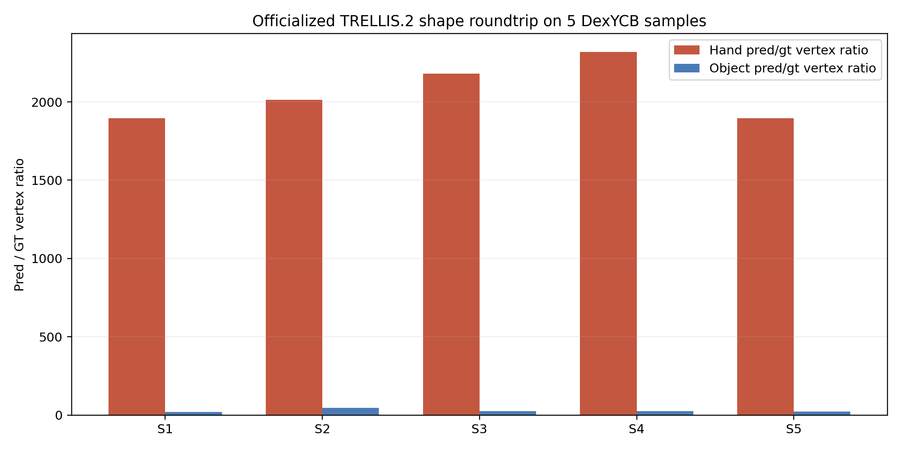

Experiment goal
不再局限于单序列单帧，而是选择 5 个不同 DexYCB `sequence_key` 和不同 `frame_index`，统一通过“更贴近官方”的 TRELLIS.2 shape 路径做交叉验证，确认 hand 异常是否稳定存在。
5/5 samples reproduced severe hand inflation on the officialized path, with hand pred/gt vertex ratios around `1895x - 2320x`; object also inflated but much less, around `20x - 46x`. Stronger negative result: the hand issue is not a single-frame artifact and is not explained by open-hand closure alone
不再局限于单序列单帧，而是选择 5 个不同 DexYCB `sequence_key` 和不同 `frame_index`，统一通过“更贴近官方”的 TRELLIS.2 shape 路径做交叉验证，确认 hand 异常是否稳定存在。
5/5 samples reproduced severe hand inflation on the officialized path, with hand pred/gt vertex ratios around `1895x - 2320x`; object also inflated but much less, around `20x - 46x`. Stronger negative result: the hand issue is not a single-frame artifact and is not explained by open-hand closure alone
S1 `20200908-subject-05/20200908_145353/840412060917`, frame `40`, `009_gelatin_box`
S2 `20200709-subject-01/20200709_151110/841412060263`, frame `38`, `025_mug`
S3 `20200820-subject-03/20200820_142319/932122060857`, frame `37`, `019_pitcher_base`
S4 `20200709-subject-01/20200709_150052/932122060857`, frame `39`, `019_pitcher_base`
S5 `20200813-subject-02/20200813_150608/840412060917`, frame `24`, `006_mustard_bottle`

Experiment artifact mirrored into the public asset bundle.